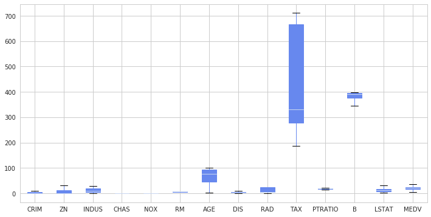
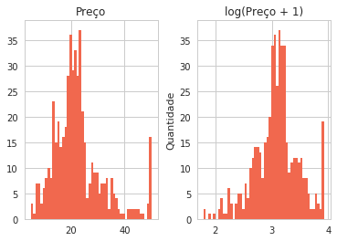
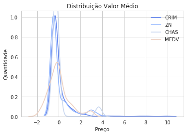
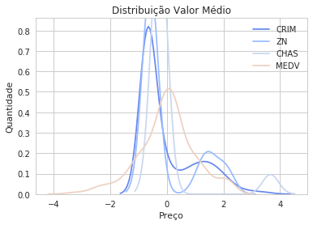
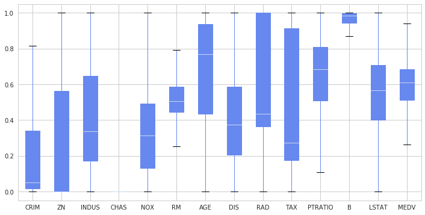
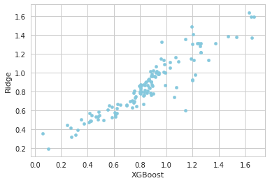

Linear Ensemble
Modelos Regressivos Compostos para Estimativas de Preço
Determinar preços de determinados itens antes de sua entrada no mercado é essencial para boa aceitação e consumo. Disponibilizar um produto no mercado abaixo do preço de mercado não te gera bons retornos, mas também um valor muito alto não agrada aos compradores, modelos regressivos nesse caso são de grande ajuda para a tomada de decisão acerca da precificação de um insumo. A performance preditiva de modelos compostos comparados a modelos simples tem sido notável nas mais diversas áreas1, modelos simples são aqueles que usam algoritmos puros do aprendizado de máquina, já modelos compostos combinam as predições de dois ou mais algoritmos na tentativa de melhorar a predição. Nessa postagem buscarei apresentar formas eficientes de combinar modelos para minimizar o erro das predições de preços de metro quadrado de imóveis em Boston.
Preparando os Dados
Aqui usarei um dataset famoso de preços de casa, mas a técnica aqui abordada pode ser estendida para precificação de quase qualquer coisa. Primeiro importarei e carregarei meu conjunto de dados na variável “boston” utilizando o Pandas, modulo do Python famoso por seus dataframes voltado a analise em finanças. O conjunto de dados advém do módulo Scikit-Learn que usaremos no decorrer desse post para trabalhar com AM, ele forneça ferramentas desde o tratamento dos dados até uma pipeline de aprendizado de máquina. Também usaremos o modulo Numpy.
%matplotlib inline
from sklearn.datasets import load_boston
import numpy as np
import pandas as pd
boston = load_boston()
df = pd.DataFrame(
np.column_stack([boston.data, boston.target]),
columns=np.r_[boston.feature_names, ['MEDV']])
df.head()| CRIM | ZN | INDUS | CHAS | NOX | RM | AGE | DIS | RAD | TAX | PTRATIO | B | LSTAT | MEDV | |
|---|---|---|---|---|---|---|---|---|---|---|---|---|---|---|
| 0 | 0.00632 | 18.0 | 2.31 | 0.0 | 0.538 | 6.575 | 65.2 | 4.0900 | 1.0 | 296.0 | 15.3 | 396.90 | 4.98 | 24.0 |
| 1 | 0.02731 | 0.0 | 7.07 | 0.0 | 0.469 | 6.421 | 78.9 | 4.9671 | 2.0 | 242.0 | 17.8 | 396.90 | 9.14 | 21.6 |
| 2 | 0.02729 | 0.0 | 7.07 | 0.0 | 0.469 | 7.185 | 61.1 | 4.9671 | 2.0 | 242.0 | 17.8 | 392.83 | 4.03 | 34.7 |
| 3 | 0.03237 | 0.0 | 2.18 | 0.0 | 0.458 | 6.998 | 45.8 | 6.0622 | 3.0 | 222.0 | 18.7 | 394.63 | 2.94 | 33.4 |
| 4 | 0.06905 | 0.0 | 2.18 | 0.0 | 0.458 | 7.147 | 54.2 | 6.0622 | 3.0 | 222.0 | 18.7 | 396.90 | 5.33 | 36.2 |
Aqui carrego meus dados na variável df e mostro as 5 primeiras linhas com o comando head.
Temos informações como criminalidade da região, idade média da população, etc.. Embora não seja o foco dessa postagem, a distribuição dos nossos dados poderá causar grande dificuldade para nosso regressor modela-la, sendo assim aplicarei uma “feature engineering” simples para tornar nossa distribuição mais normal, em posts futuros será explicado em detalhes o que é feature engineering e como utiliza-la para melhorar suas predições. Primeiro vamos ver como está a distribuição que queremos prever ao lado da distribuição “normalizada” por f.log(x+1), (acrescentar um ao valor nos evita ter problemas com zeros).
import seaborn as sns
import matplotlib.pyplot as plt
sns.set(style="whitegrid", palette="coolwarm")
Primeiro carrego as bibliotecas de gráfico que utilizarei no decorrer do texto, defino configurações como estilo e paleta de cores para o gráfico, em seguida monto um dataframe prices para receber duas colunas de valores, uma com o preço sem transformação, outra com o preço tranformado pela função log1p (f.log(x+1)).
prices = pd.DataFrame({"Preço":df["MEDV"], "log(Preço + 1)":np.log1p(df["MEDV"])})
prices.hist(color="#F1684E", bins=50)
plt.ylabel("Quantidade")
Podemos ver que nossa distribuição ficou menos espaçada e um pouco mais próxima de uma distribuição normal, mas o Python conta com uma função estatística que nos ajuda avaliar se isso será necessário ou não, através do teste de Box-Cox que terá indícios com o grau de Obliquidade (Skewness).
CRIM 5.222039072246122 ZN 2.219063057148425 CHAS 3.395799292642519 DIS 1.0087787565152246 RAD 1.0018334924536951 LSTAT 0.9037707431346133 MEDV 1.104810822864635
Um Pouco de Feature Engeneering
O teste de Box-Cox2 nos diz que um skew acima de 0.75 pode ser linearizado pela função log(x+1), fazendo a distribuição ficar mais normalizada, abaixo disso posso manter o valor como estava sem necessidades de modificação, vamos olhar o antes e depois de aplicar essa função a nossas distribuições. (Suprimi algumas variáveis para não poluir demais o gráfico).
dfnorm = (df - df.mean()) / (df.std())
for x in ["CRIM", "ZN", "CHAS","MEDV"]:
sns.kdeplot(dfnorm[x])
plt.title("Distribuição Valor Médio")
plt.xlabel("Preço")
plt.ylabel("Quantidade")
dfnorm = (df - df.mean()) / (df.std())
for x in ["CRIM", "ZN", "CHAS","MEDV"]:
sns.kdeplot(dfnorm[x])
plt.title("Distribuição Valor Médio")
plt.xlabel("Preço")
plt.ylabel("Quantidade")
Vemos que as distribuições ficaram muito mais centradas e tendendo a distribuição gaussiana3, o que será excelente para o ajuste dos nossos estimadores4. Sendo a função logarítmica e a função f.x+1 bijetoras, poderemos retornar ao nosso valor original assim que acabarmos o ajuste do modelo.
Simplificando nossos dados
Nossos dados ainda podem estar muito complexos, a escala em que se encontram e talvez um excesso de informação necessária podem impossibilitar que nosso modelo atinja a perfeição. Aqui iremos aplicar duas técnicas, a primeira e escalonamento de variáveis pelo máximo-mínimo, transformação que também é reversível é poderá ser desfeita ao preço final, bastando eu guardar as variáveis da minha transformação.
CRIM 1.020192 ZN 1.620831 INDUS 6.860353 CHAS 0.176055 NOX 0.115878 RM 0.702617 AGE 28.148861 DIS 0.413390 RAD 0.751839 TAX 168.537116 PTRATIO 2.164946 B 91.294864 LSTAT 0.539033 MEDV 0.386966 dtype: float64
É visível que algumas variáveis estão extremamente dispersas, podemos mudar isso com a seguinte formula
$$ z_i=\frac{x_i-\min(x)}{\max(x)-\min(x)} $$
Assim nossas variáveis estarão entre zero e um, ficando mais simplificada a predição.
CRIM 0.227050 ZN 0.351200 INDUS 0.251479 CHAS 0.253994 NOX 0.238431 RM 0.134627 AGE 0.289896 DIS 0.227300 RAD 0.297672 TAX 0.321636 PTRATIO 0.230313 B 0.230205 LSTAT 0.202759 MEDV 0.180819 dtype: float64
Excelente!!
Tudo Pronto
Finalizado nosso ajuste nos dados após tanto trabalho vamos agora para o ajuste dos nossos modelos, acostume-se, tratar os dados é o que lhe consumirá mais tempo em um processo de aprendizado de máquina. Mas por fim vamos dar uma olhada final em como eles ficaram distribuídos. Usarei a função interna do Pandas, boxplot, se tem dúvida do que esse gráfico representa, veja aqui.

Como já discutido em outras postagens, devemos separar os dados em um conjunto de treino e teste, para treinar nosso modelo e para saber quão bem nosso modelo irá prever para casos desconhecidos. Leia essa publicação para entender melhor.
Aqui usamos a função interna do Scikit-Learn para separar os dados, para informações adicionais sobre todas as variáveis das funções abaixo sugiro consultar a documentação oficial. Como primeiro argumento passo meu X, atributos, e segundo argumento meu y, valor que eu desejo prever, por fim passo um inteiro para tornar meus resultados reprodutíveis, tornando os processos aleatórios das funções não-aleatórios.
from sklearn.model_selection import train_test_split
xtrain, xtest, ytrain, ytest =\
train_test_split(df.drop('MEDV',1).values, df['MEDV'].values, random_state=201)Agora importaremos nossos dois modelos, o primeiro é o XGBoost, algoritmo que vem se demonstrando extremamente eficiente em competições e o Ridge famoso algoritmo regressor. Iremos avaliar nossos modelos pelo erro médio quadrático.
import xgboost as xgb
from sklearn.linear_model import Ridge
from sklearn.metrics import mean_squared_errorAqui executo uma pequena melhoria nos hiperparametros com o GridSearchCV para buscar a combinação dos hiperparametros que me dará uma melhor predição, em seguida ajusto meu modelo aos dados e tendo ele treinando, prevejo para dados que ele desconhece, em seguida avalio o desempenho do modelo como dito.
from sklearn.model_selection import GridSearchCV
params = {'alpha': np.linspace(0.1,1,200),
'random_state':[2020]}
model1 = GridSearchCV(estimator = Ridge(), param_grid = params)
model1.fit(xtrain,ytrain)
linpred = model1.predict(xtest)
err1 = mean_squared_error(linpred, ytest)
print(err1)0.00736161092505
params = {'reg_alpha': np.linspace(0,1,10),
'gamma': np.linspace(0,1,1),
'reg_lambda': np.linspace(0,1,1)}
model2 = GridSearchCV(estimator = xgb.XGBRegressor(), param_grid = params)
model2.fit(xtrain, ytrain)
xgbpred = model2.predict(xtest)
err2 = mean_squared_error(xgbpred, ytest)
print(err2)0.00526337776169
Resultados muito bons, mas será que podemos deixá-los ainda melhor?! Vamos analisar se as nossas predições têm baixa correlação.
predictions = pd.DataFrame({"XGBoost":np.expm1(xgbpred), "Ridge":np.expm1(linpred)})
predictions.plot(x = "XGBoost", y = "Ridge", kind = "scatter", color="#85C8DD")
Como já explicado, uma baixa correlação tende a melhorar significativamente nossa predição, visualmente temos algo significante, vamos olhar agora isso em números
from scipy import stats
_, _, r_value, _, std_err = stats.linregress(np.expm1(xgbpred),np.expm1(linpred))
print(r_value, std_err)0.923252641379 0.0321275120299
Devido nosso r-valor não ser muito alto (<.98), podemos nos beneficiar da combinação das estimativas. Chegamos a parte da motivação inicial combinar os modelos para aumentar o desempenho preditivo. Testarei 3 combinações das predições, média ponderada, media simples e média harmônica.
err3 = mean_squared_error(xgbpred * 0.8 + linpred * 0.2, ytest) # media ponderada
err4 = mean_squared_error((xgbpred + linpred)/2, ytest) # media simples
err5 = mean_squared_error(stats.hmean([xgbpred, linpred]), ytest)# media harmonica
print(err3, err4, err5)0.00499853754395 0.00524298328056 0.00517761354333
Excelente, ouve uma melhora significativa, mas o quão significativa?
0.050317539369457931
Está aí, 5% de melhora do nosso melhor estimador, bem significativo para algo tão simples, e tais aprimoramentos acima de algoritmos de alto desempenho são de extrema importancia no mundo da ciência de dados, talvez até nos ajudaria a pular milhares de posições rumo ao topo em uma competição valendo 1,2 milhões de dólares5.
Concluindo
O objetivo principal dessa publicação era demonstrar que uma combinação simples entre dois modelos podem impactar significamente na sua predição, mas durante esse processo fiz alguns tratamentos nos dados que irão te impressionar sobre o impacto na redução do nosso erro, experimente avaliar os modelos sem realizar alguns dos tratamentos que dei aos dados… Em publicações futuras, será explicado mais sobre cada técnica vista aqui.
Referências
Bootstrap_aggregating Wikipedia
Regularized Linear Models Kernel
Polikar, R. (2006). “Ensemble based systems in decision making”. IEEE Circuits and Systems Magazine. 6 (3): 21–45. doi:10.1109/MCAS.2006.1688199↩
http://www.itl.nist.gov/div898/handbook/eda/section3/eda336.htm↩
https://stats.stackexchange.com/questions/298/in-linear-regression-when-is-it-appropriate-to-use-the-log-of-an-independent-va↩
https://stats.stackexchange.com/questions/18844/when-and-why-should-you-take-the-log-of-a-distribution-of-numbers↩
https://www.kaggle.com/c/zillow-prize-1↩